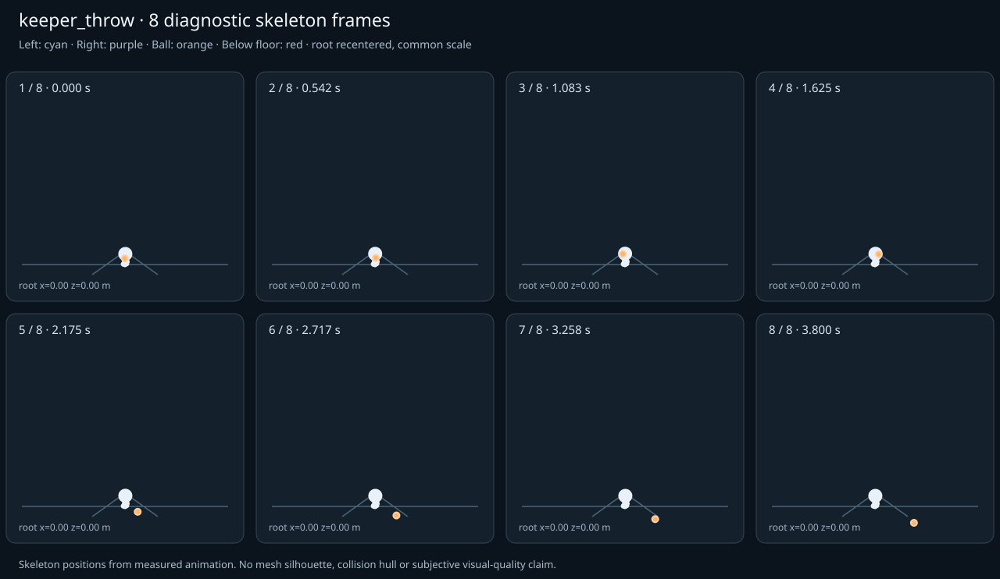

כל המדידות · תצוגת התנועה · JSON מקורי
ציון 95.1 · כיסוי 100%
עמידת ייחוס באותו תפקיד: keeper_ready. תרחיש השחקן החיצוני מיושם פעם אחת.

| מדד | מצב | ערך | ציון | ראיות |
|---|---|---|---|---|
| החלקת רגליים | ירוק | 0.000027 | 99.95 | ראיות מקוריות{
"coordinateSpace": "Native GLB plus declared external actor position and heading, applied once.",
"supportSource": "declared",
"windows": 2,
"samples": 914,
"maxDriftMeters": 0.000046,
"p95SpeedMetersPerSecond": 0.001034,
"worst": {
"bone": "LeftFoot",
"t": 1.316667,
"start": 0,
"end": 3.8,
"driftMeters": 0.000046
}
} |
| חדירה לרצפה | ירוק | 0 | 100 | ראיות מקוריות{
"samples": 9140,
"floorY": 0,
"probeKind": "declared sole probes plus skeletal joint centers (no mesh surfaces)",
"maxDepthMeters": 0,
"worst": {
"t": 0,
"bone": "LeftFoot",
"depthMeters": 0,
"y": 0.004
}
} |
| קפיצות פוזה | צהוב | 1.128584 | 77.43 | ראיות מקוריות{
"adjacentPairs": 456,
"observations": 7752,
"maxDegrees60Hz": 16.928763,
"maxMarkerStepHeight60Hz": 0.041452,
"maxRootStepHeight60Hz": 0,
"worst": {
"ratio": 1.1285841795182596,
"t": 0.766667,
"previousTime": 0.758333,
"bone": "RightForeArm",
"markerStepHeight60Hz": 0.041452,
"degrees60Hz": 16.928763
}
} |
| חריגות אנטומיות | ירוק | 0 | 100 | ראיות מקוריות{
"testedFrames": 457,
"affectedFrames": 0,
"checks": 7769,
"maxLimbFlexionDegrees": 146.122457,
"maxRelativeSegmentLengthChange": 0,
"hingeDirectionChecked": true,
"axialTwistChecked": false,
"violations": []
} |
| מגע בכדור | ירוק | 0.002305 | 96.93 | ראיות מקוריות{
"radiusMeters": 0.11,
"samples": 116,
"missed": [],
"contacts": [
{
"t": 0.816667,
"bone": "RightHand",
"gapMeters": 0.003896,
"signedGapMeters": -0.003896,
"centerDistanceMeters": 0.106104,
"contactPoint": [
-0.258069,
1.245529,
-0.012204
],
"ballCenter": [
-0.255992,
1.24536,
0.093879
],
"declaredLocalPoint": true
},
{
"t": 0.783333,
"bone": "RightHand",
"gapMeters": 0.003584,
"signedGapMeters": -0.003584,
"centerDistanceMeters": 0.106416,
"contactPoint": [
-0.245555,
1.199626,
0.05074
],
"ballCenter": [
-0.241058,
1.199411,
0.15706
],
"declaredLocalPoint": true
},
{
"t": 0.85,
"bone": "RightHand",
"gapMeters": 0.002943,
"signedGapMeters": -0.002943,
"centerDistanceMeters": 0.107057,
"contactPoint": [
-0.269547,
1.284558,
-0.06736
],
"ballCenter": [
-0.2688,
1.284768,
0.039694
],
"declaredLocalPoint": true
},
{
"t": 0.808333,
"bone": "RightHand",
"gapMeters": 0.00294,
"signedGapMeters": -0.00294,
"centerDistanceMeters": 0.10706,
"contactPoint": [
-0.253933,
1.234447,
0.001934
],
"ballCenter": [
-0.252422,
1.234376,
0.108983
],
"declaredLocalPoint": true
},
{
"t": 0.825,
"bone": "RightHand",
"gapMeters": 0.002906,
"signedGapMeters": -0.002906,
"centerDistanceMeters": 0.107094,
"contactPoint": [
-0.26103,
1.256115,
-0.027739
],
"ballCenter": [
-0.259428,
1.255932,
0.079343
],
"declaredLocalPoint": true
},
{
"t": 0.775,
"bone": "RightHand",
"gapMeters": 0.002789,
"signedGapMeters": -0.002789,
"centerDistanceMeters": 0.107211,
"contactPoint": [
-0.240379,
1.187319,
0.06662
],
"ballCenter": [
-0.237106,
1.187251,
0.17378
],
"declaredLocalPoint": true
},
{
"t": 0.791667,
"bone": "RightHand",
"gapMeters": 0.002613,
"signedGapMeters": -0.002613,
"centerDistanceMeters": 0.107387,
"contactPoint": [
-0.248401,
1.21161,
0.03331
],
"ballCenter": [
-0.244939,
1.211352,
0.140641
],
"declaredLocalPoint": true
},
{
"t": 0.883333,
"bone": "RightHand",
"gapMeters": 0.002262,
"signedGapMeters": -0.002262,
"centerDistanceMeters": 0.107738,
"contactPoint": [
-0.27879,
1.31457,
-0.110038
],
"ballCenter": [
-0.278726,
1.31531,
-0.002302
],
"declaredLocalPoint": true
},
{
"t": 0.841667,
"bone": "RightHand",
"gapMeters": 0.002209,
"signedGapMeters": -0.002209,
"centerDistanceMeters": 0.107791,
"contactPoint": [
-0.266398,
1.275504,
-0.05559
],
"ballCenter": [
-0.265844,
1.275673,
0.0522
],
"declaredLocalPoint": true
},
{
"t": 0.858333,
"bone": "RightHand",
"gapMeters": 0.002204,
"signedGapMeters": -0.002204,
"centerDistanceMeters": 0.107796,
"contactPoint": [
-0.27214,
1.293158,
-0.079836
],
"ballCenter": [
-0.271574,
1.293303,
0.027958
],
"declaredLocalPoint": true
},
{
"t": 0.75,
"bone": "RightHand",
"gapMeters": 0.001922,
"signedGapMeters": -0.001922,
"centerDistanceMeters": 0.108078,
"contactPoint": [
-0.230587,
1.15244,
0.117094
],
"ballCenter": [
-0.225,
1.15,
0.225
],
"declaredLocalPoint": true
},
{
"t": 0.916667,
"bone": "RightHand",
"gapMeters": 0.001825,
"signedGapMeters": -0.001825,
"centerDistanceMeters": 0.108175,
"contactPoint": [
-0.28514,
1.334777,
-0.138648
],
"ballCenter": [
-0.285386,
1.335802,
-0.030478
],
"declaredLocalPoint": true
},
{
"t": 1.25,
"bone": "RightHand",
"gapMeters": 0.001766,
"signedGapMeters": -0.001766,
"centerDistanceMeters": 0.108234,
"contactPoint": [
-0.256503,
1.307403,
-0.050801
],
"ballCenter": [
-0.25582,
1.306055,
0.057422
],
"declaredLocalPoint": true
},
{
"t": 1.283333,
"bone": "RightHand",
"gapMeters": 0.001715,
"signedGapMeters": -0.001715,
"centerDistanceMeters": 0.108285,
"contactPoint": [
-0.251623,
1.317989,
0.004803
],
"ballCenter": [
-0.250279,
1.316133,
0.113064
],
"declaredLocalPoint": true
},
{
"t": 0.875,
"bone": "RightHand",
"gapMeters": 0.001698,
"signedGapMeters": -0.001698,
"centerDistanceMeters": 0.108302,
"contactPoint": [
-0.276592,
1.308037,
-0.101367
],
"ballCenter": [
-0.276543,
1.308594,
0.006934
],
"declaredLocalPoint": true
},
{
"t": 0.891667,
"bone": "RightHand",
"gapMeters": 0.001693,
"signedGapMeters": -0.001693,
"centerDistanceMeters": 0.108307,
"contactPoint": [
-0.280751,
1.320839,
-0.118969
],
"ballCenter": [
-0.280702,
1.321392,
-0.010663
],
"declaredLocalPoint": true
},
{
"t": 0.741667,
"bone": "RightHand",
"gapMeters": 0.00164,
"signedGapMeters": -0.00164,
"centerDistanceMeters": 0.10836,
"contactPoint": [
-0.225162,
1.139225,
0.133911
],
"ballCenter": [
-0.220941,
1.137509,
0.242175
],
"declaredLocalPoint": true
},
{
"t": 1.216667,
"bone": "RightHand",
"gapMeters": 0.001524,
"signedGapMeters": -0.001524,
"centerDistanceMeters": 0.108476,
"contactPoint": [
-0.262188,
1.304751,
-0.092455
],
"ballCenter": [
-0.261882,
1.303789,
0.016016
],
"declaredLocalPoint": true
},
{
"t": 0.583333,
"bone": "RightHand",
"gapMeters": 0.001477,
"signedGapMeters": 0.001477,
"centerDistanceMeters": 0.111477,
"contactPoint": [
-0.165171,
0.965563,
0.369011
],
"ballCenter": [
-0.164614,
0.964198,
0.480478
],
"declaredLocalPoint": true
},
{
"t": 0.908333,
"bone": "RightHand",
"gapMeters": 0.001383,
"signedGapMeters": -0.001383,
"centerDistanceMeters": 0.108617,
"contactPoint": [
-0.283843,
1.330854,
-0.13336
],
"ballCenter": [
-0.284031,
1.331633,
-0.024745
],
"declaredLocalPoint": true
}
],
"contactDetailsTruncated": true,
"coordinateSpace": "Native GLB plus declared external actor position and heading, applied once."
} |
| כניסה ויציאה מול המתנה | ירוק | 0.003652 | 99.93 | ראיות מקוריות{
"entry": {
"ratio": 0.0036516801076730675,
"t": 0,
"idleTime": 0.033333,
"markers": 17,
"rmsPositionHeight": 0.000006,
"rmsRotationDegrees": 0.001646,
"rmsVelocityHeightPerSecond": 0.002739,
"velocityEvaluated": true
},
"exit": {
"ratio": 0.0002283667877911942,
"t": 3.8,
"idleTime": 2.4,
"markers": 17,
"rmsPositionHeight": 0,
"rmsRotationDegrees": 0.000001,
"rmsVelocityHeightPerSecond": 0.000171,
"velocityEvaluated": true
},
"worstEndpoint": "entry",
"alignment": "horizontal root translation; raw asset poses used when provided"
} |
| מהירות גוף מול צעדים | לא חל | — | — | ראיות מקוריות{} |
| סימטריה | ירוק | 0 | 100 | ראיות מקוריות{
"mode": "structural",
"modeSource": "declared",
"structuralMismatch": 0,
"segments": [
{
"segment": "Arm-ForeArm",
"mismatch": 0
},
{
"segment": "ForeArm-Hand",
"mismatch": 0
},
{
"segment": "UpLeg-Leg",
"mismatch": 0
},
{
"segment": "Leg-Foot",
"mismatch": 0
}
],
"motionRmsHeight": null,
"worstMotion": null,
"bilateralPoseRmsHeightUnscored": 0.075056,
"note": "One-sided authored actions are checked for structural symmetry only."
} |